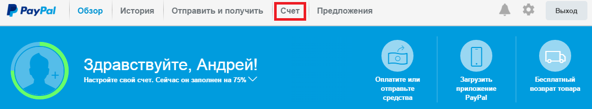
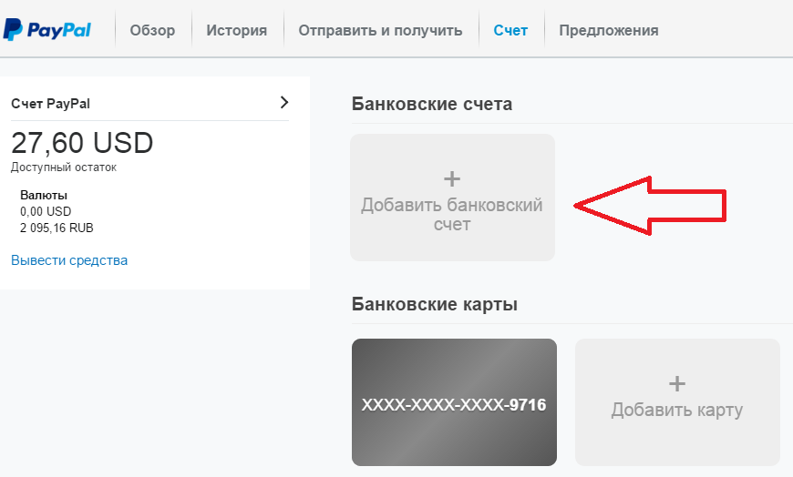
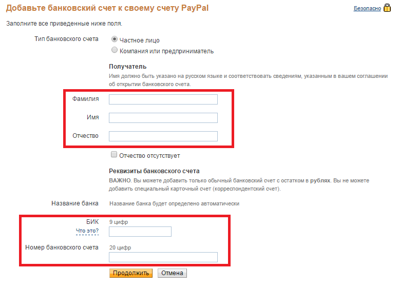
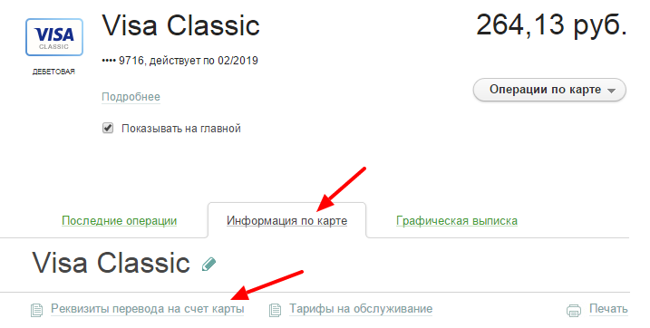
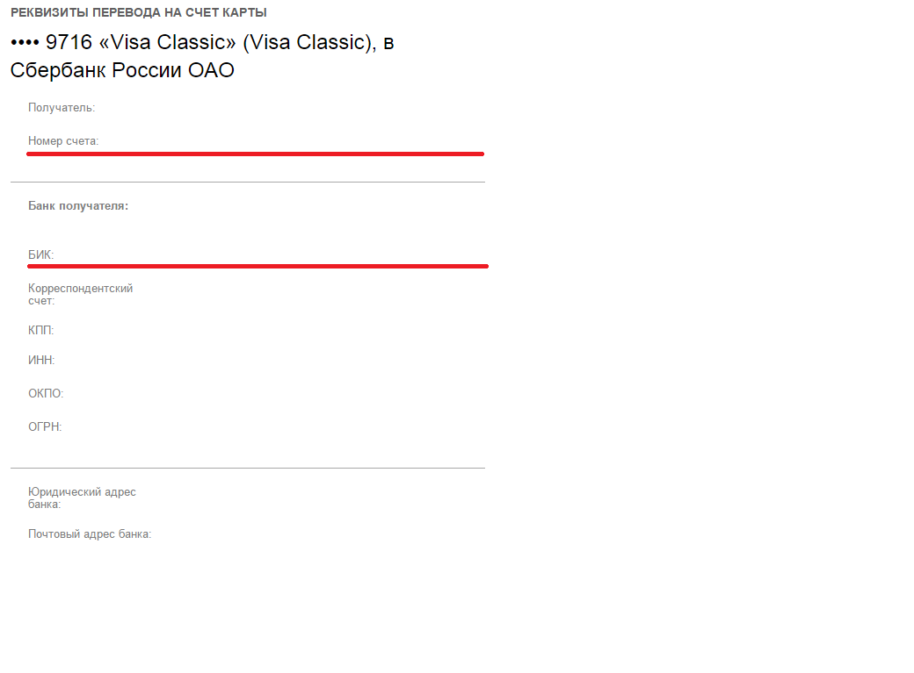
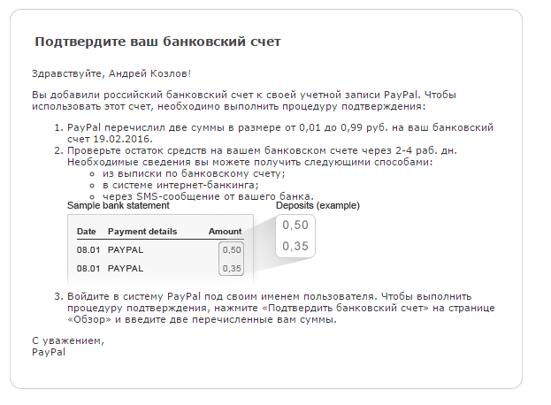
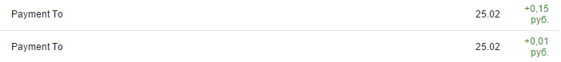
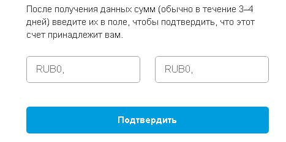
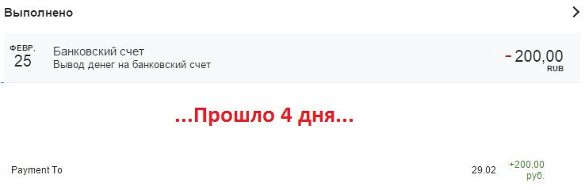

Если вы часто получаете платежи на счет платежной системы PayPal, то достаточно быстро возникнет вопрос – как вывести деньги из PayPal? На мой взгляд, удобнее всего выводить средства на банковскую карту.
Рассмотрим вывод денег на карту Сбербанка, как самого популярного банка в РФ.
Привязываем данные карты в PayPal
Заходим в свой личный кабинет на сайте PayPal и открываем вкладку Счет:

Затем выбираем «Добавить банковский счет» (пункт «Добавить карту» предназначен для пополнения счета PayPal, а не для вывода денег. Поэтому его не трогаем).

В открывшимся окне выбираем «Частное лицо» и заполняем строки с вашими ФИО:

Далее нам нужно будет указать БИК и номер банковского счета. Важный момент: используется именно банковский (20-тизначный) счет вашей карты, а не те 16 цифр, которые нарисованы на лицевой стороне вашей карты. Узнать БИК и номер счета вашей карты можно через сервис Сбербанк Онлайн или получив выписку в любом банкомате Сбербанка.
Узнаем платежные данные карты Сбербанка
В Сбербанк Онлайн данный карты можно получить так – выбираем нужную нам карту, жмём по вкладке «Информация по карте» , а затем «Реквизиты перевода на счет карты» :

Здесь как раз и находятся нужные нам данные:

Важно: не спутайте «Номер счета» и «Корреспондентский счет». Нам нужен именно «Номер счета».
Далее копируем БИК и Номер счета в форму PayPal и подтверждаем правильность введенной информации.
Теперь осталось только подтвердить банковский счет.
Подтверждаем банковский счет
После ввода всей необходимой информации PayPal присылает вот такое письмо:

В течение нескольких дней PayPal отправит на вашу карту 2 перевода суммой от 0.01 до 0.99 руб.:

Как только эти переводы получены, заходим в PayPal на вкладку «Мои счета» и подтверждаем факт получения этих переводов – вводим их суммы:

Готово! Теперь можно вывести деньги из PayPal на карту.
Для проверки попробуем вывести 200 рублей из PayPal на банковскую карту:

Вывести деньги из PayPal – легко!
Сделать это можно либо с главной страницы сервиса, либо из вкладки «Счет», нажав «Вывести средства». Получив деньги на карту, снять их можно через любой банкомат Сбербанка или воспользоваться ими через Сбербанк Онлайн.
Также немного информации: